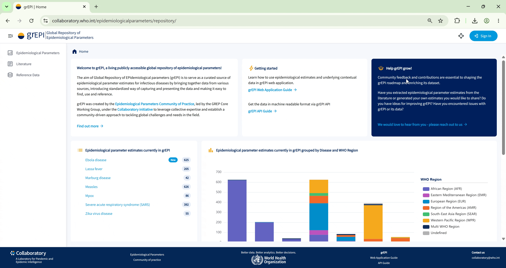
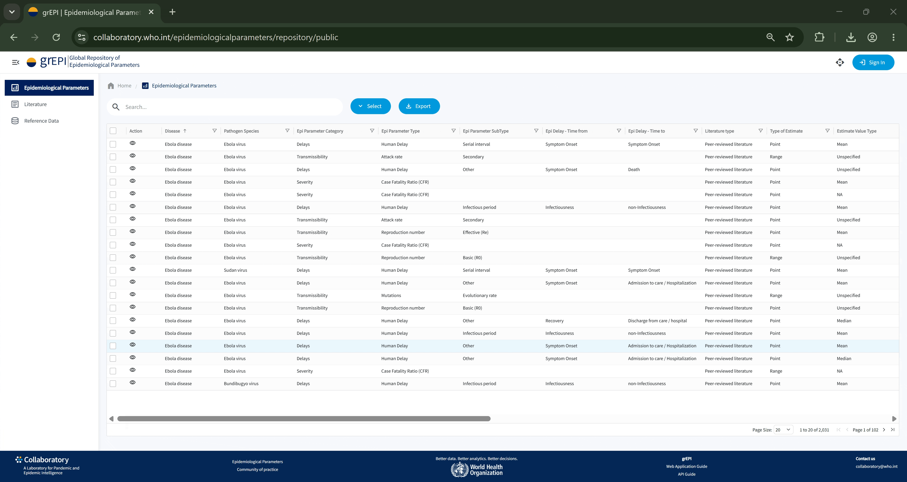
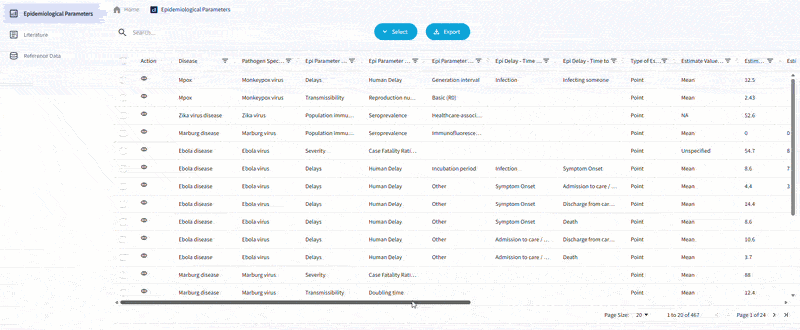
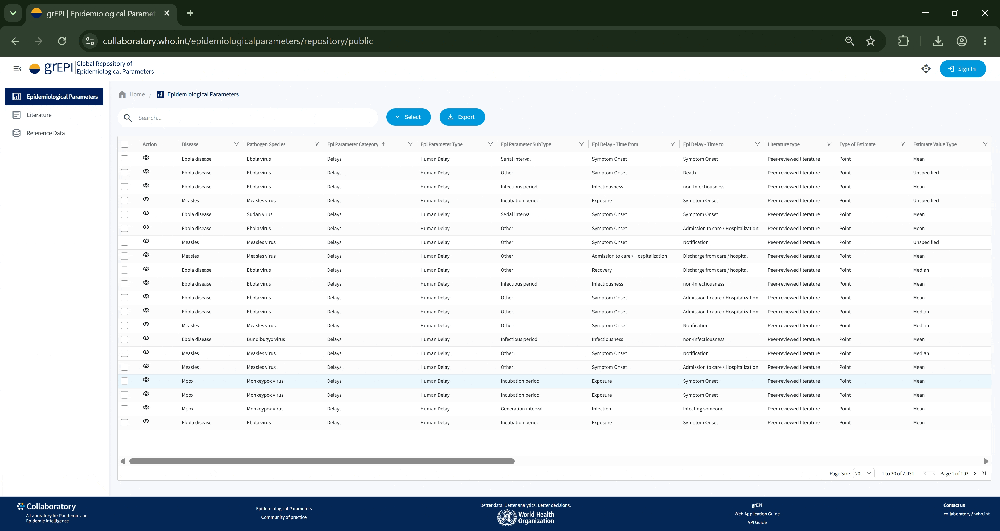
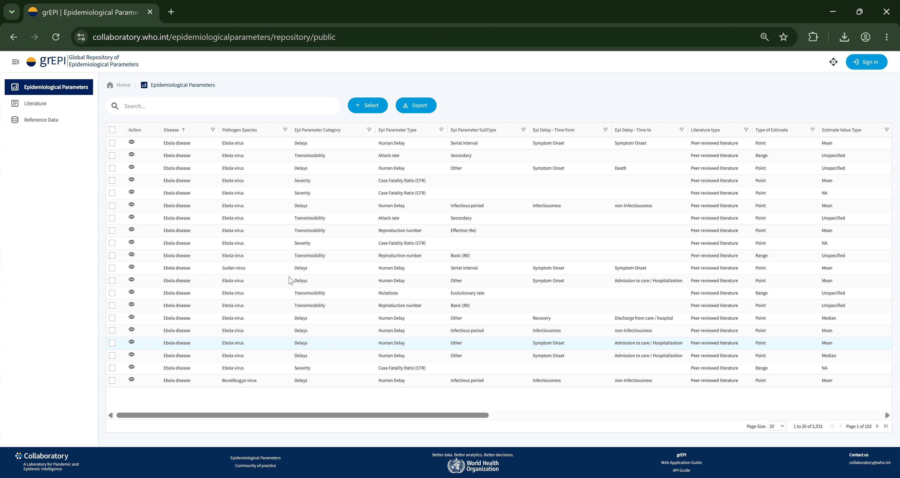
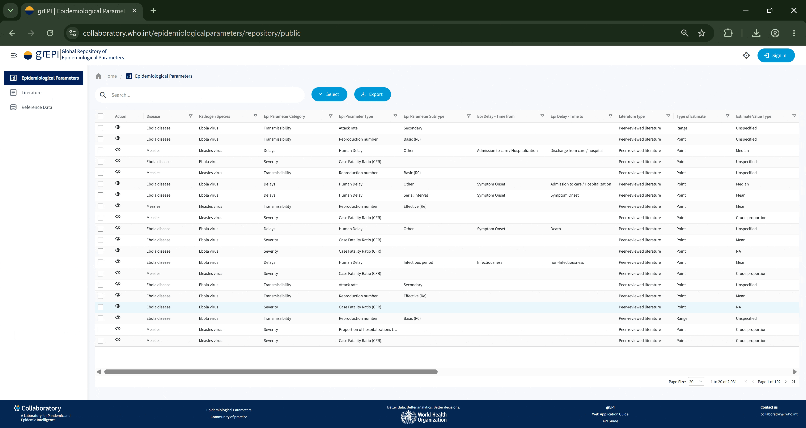
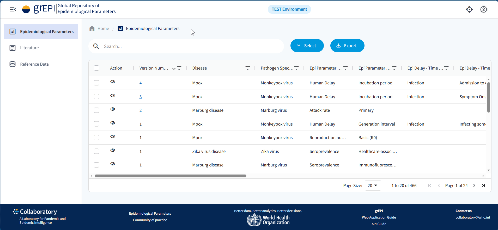
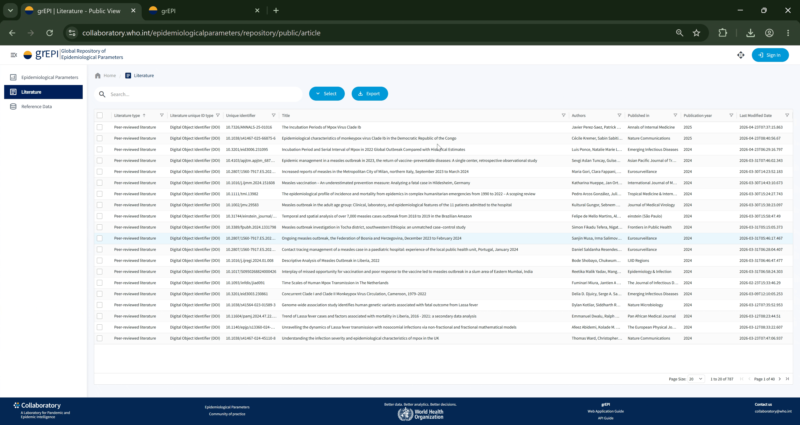
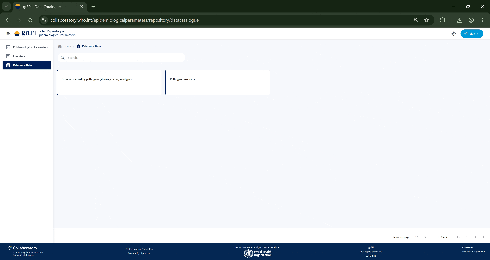

grEPI is a digital public good for health, a free and open-access software product whose aim is to serve as a living, global, standardized repository (library) of epidemiological parameter estimates by enabling user-friendly online interface for exploring, retrieving and providing data throught web application features as well as API services as machine-readable interface for retrieving desired data programatically.
While the World Health Organization hosts grEPI on its dedicated cloud infrastructure, the product is being designed, developed and maintained by the Epidemiological Parameters Community of Practice under the Collaboratory initiative.
Envisioned as a living resource that continuously evolves through community feedback loops and contributions, grEPI, in its initial proof-of-concept version, brings together epidemiological parameter estimates extracted from the scientific literature by subject matter experts. It provides a central view with standardized vocabulary, such as disease and pathogen context, as well as methodological details and, references to the corresponding data sources. By providing transparent and adjustable views on epidemiological parameter estimates and related data sources, grEPI aims to enable quick identification of relevant epidemiological parameter estimates and support more efficient, reproducible, and consistent epidemiological analyses, strengthening evidence-based decision-making in public health.


To address the main challenge of data heterogeneity and the significant amount of time and effort needed to adjust the data to be able to use it further, grEPI is currently adhering to the WHO International Classification of Diseases(ICD-11), legally cleared WHO Geo Data standard for Health Boundaries for Administrative Level 0 (Countries, Territories, Areas) and is also implementing best practices for classifying and categorizing specific properties of an epidemiological parameter estimate or a literature item.
Using standardized actively maintained vocabulary increases the data quality and enables better understanding of the context.
Learn more arrow_right_alt
Using main features of grEPI, such as browsing and exporting epidemiological parameter estimates and literature in both web application and API, does not bear any licensing cost and does not require creating an application account. As a digital public good for health, access to grEPI is free and open. One only needs to be connected to the Internet to be able to use grEPI in their web browser.
Using grEPI web application interface does not require any specific technical background or skillset. The interface is designed to be user-friendly as possible and to enable smooth user journeys to the desired outcomes.
Learn more arrow_right_alt
The design approach of grEPI enables quick adaptation and response to changes in the field with the goal of serving as a global digital public good for health. grEPI is not limited to a disease, pathogen, geography, primary data source or any other specific context. The underlying relational database is designed to support entities and relations rather than hardcoding specific contexts for specific use cases.
Reference data module serves as a core feature of grEPI web application to enable quick configuration of new specific contexts or changes to the existing ones.
Learn more arrow_right_alt
grEPI aims to be a living, community-driven resource, with additional data continuously added and refined over time.
Future improvements are determined taking into consideration community feedback and priorities defined by the GREP Core Working Group.
Each epidemiological parameter estimate includes structured metadata - such as parameter definition, disease and pathogen properties, quantitative representations, population study and other methodological details - and links to source publications, ensuring transparency, comparability, and reuse.
There are existing tools already adopted by the experts in the field as well as exciting tools under development with great potential to introduce further improvements. The aim of grEPI is to contribute to the existing epi ecosystem in the most useful ways. The first goal is to explore ways of using grEPI as a data source - epidemiological parameter estimate library by epiparameter tool.
The interactive view enables you to quickly discover epidemiological parameter estimates, articles those were derived from and data sources they were pulled from by:
The interactive view enables you to quickly discover scientific articles of interest by:
The interactive view provides an overview of the common dictionary and related standards used to define certain properties of an epidemiological parameter estimate or an article.
The public view offers a limited view of the reference data library. The authenticated view, which does require an active Collaboratory account, allows a full view of the reference data library.
grEPI is a publicly accessible web application organized into sections for epidemiological parameters, literature, and reference data. It supports browsing, search, filtering, customizable views, and CSV export. For full details on each section and how to use grEPI, see the comprehensive user manual or follow the guide below
grEPI can be accessed both with and without logging in. Please note that the full set of reference tables and role-based features are only available to users who are logged in with an active Collaboratory account.

Shows a high-level summary of epidemiological parameter estimates currently available in grEPI grouped by disease. It allows viewers to see the volume of available data across different diseases and quickly access subset of their interest.

Interactive stacked bar chart shows epidemiological parameter estimates in grEPI grouped by disease and WHO region, allowing viewers to explore the geographical distribution of available data per disease.

Shows a high-level summary of epidemiological parameter estimates currently available in grEPI grouped by epidemiological parameter category It allows viewers to see the volume of available data across different epidemiological parameter categories and quickly access subset of their interest.

Interactive stacked bar chart shows epidemiological parameter estimates in grEPI grouped by disease and epidemiological parameter category, allowing viewers to explore the categorization of available data per disease.

The full dataset contains over 100 properties of an epidemiological parameter estimate including properties of the literature source and primary data source. The default view shows only limited subset of properties.

You can customize the table view according to your needs.
In addition to the search function, you can use multiple column filters to easily locate specific epidemiological parameter estimates.

Epidemiological Parameters view contains the core dataset: epidemiological parameter estimates extracted from the literature. Each row represents a single epidemiological parameter estimate (e.g., an incubation period for Mpox from a specific study).

The detail view provides a comprehensive breakdown of the selected record, including a high-level summary of the disease, pathogen, and estimate, followed by structured sections covering disease classification and transmission, parameter categorization, and the estimate itself with associated uncertainty.

The version history provides an overview of all available versions of an epidemiological parameter estimate, displayed in a structured table format. It includes the version number, whether a version is the latest, when it was created, by whom, and the reason for the update. The header of the pop‑up also displays the Record Version ID, which uniquely identifies the parameter across all versions. Each version itself is stored as a separate record with its own version number.

The detailed view of an epidemiological parameter estimate allows users to compare two versions side by side, providing a structured overview of changes across all fields. This feature is only available when there is more than one version of the apidemiological parameter estimate entry.

The Literature section lists the source publications from which parameter estimates have been extracted.

Reference Data holds the controlled vocabularies that define the valid values used throughout grEPI.

Each of the three main sections - Epidemiological Parameters, Literature, and Reference Data (individual catalogues) supports data export in CSV format.
grEPI provides a public, read-only REST API that returns data in JSON format. No authentication is required. The base URL for all requests is https://collaboratory.who.int/grepi/api. String filters are case-insensitive and support partial matching. For full details, see the grEPI API documentation.
Epidemiological parameter estimates extracted from the literature. Filter by disease, pathogen, estimate type, and more.
Shows differences between two different versions of the same Epidemiological parameter estimate entry.
Literature records from which parameter estimates have been extracted. Search by DOI, title, author, or year.
Pathogen taxonomy with grEPI preferred names and ICD codes.
Disease-to-pathogen mappings with grEPI preferred names and ICD codes.
library(httr2)
resp <- request("https://collaboratory.who.int/grepi/api/EpiParameterEstimates") |> req_url_query(Disease_Name_Preferred = "Measles") |> req_perform()
measles <- resp_body_json(resp, simplifyVector = TRUE)
import requests
response = requests.get( "https://collaboratory.who.int/grepi/api/EpiParameterEstimates", params={"Disease_Name_Preferred": "Measles"} )
measles = response.json()
Full version history with breaking changes, new features, bug fixes, and other important deliverables.